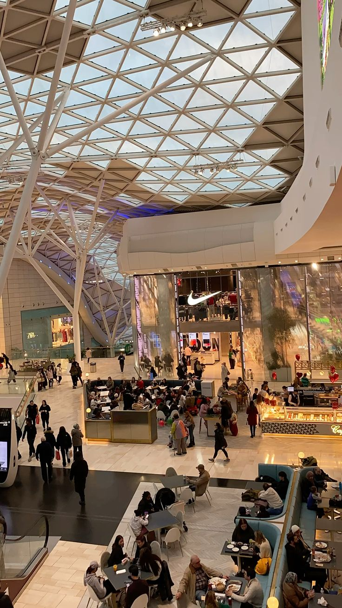
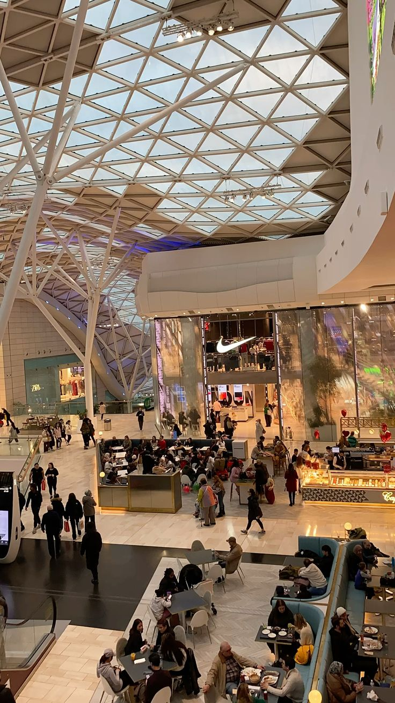

Wander along Oxford Street – one of the most famous London shopping streets – which is home to more than 300
shops, designer outlets, high-street chains and landmark stores. Here's a flavour of Oxford Street shopping:
Go on an exploration of legendary department store Selfridges and then chill at its very own cinema once you’re
all shopped out.
Be blown away by the scents of vegan-friendly products at LUSH, one of the biggest stores in the country and a
wonderfully fragrant Oxford Street shop.
Look for big brands all in one place at famous department store John Lewis & Partners.
Peruse vintage-inspired threads, home decor and more at Urban Outfitters.
Grab bargain fashion pieces at Primark’s massive flagship store, perfect for cheap shopping in London.
Check the latest trends at Zara which has its flagship on Oxford Street.
Find all manner of toys and accessories featuring favourite Disney characters at The Disney Store.
Top tip: Get off the beaten track by slipping into a side street, such as St Christopher's Place, home to
boutiques including Malini and Mulberry.
Nearest Tube stations: Oxford Circus, Bond Street and Tottenham Court Road
Bond Street and Mayfair
Whether you want to splash out on the best in designer clothes or just love luxury window shopping, Bond
Street and Mayfair are the places to go for extravagant retail therapy and celeb-spotting.
Arguably two of London’s most exclusive shopping areas, they're home to big names and labels seen on
runways.
Shop for sparkly additions to your wardrobe at the Tiffany & Co flagship on Old Bond Street and get your
piece engraved to truly make it your own.
Refresh your wardrobe at luxury fashion store Browns.
Visit Burberry on Bond Street, the home of the iconic check.
Go for the famous monogrammed pieces of Louis Vuitton.
Peek inside shops in nearby South Molton Street, which boasts French fashion boutiques including Maje and
Claudie Pierlot, or try on contemporary jewellery at Annoushka.
Walk the labyrinth-like corridors of Grays Antique Markets on Davies Street, featuring antiques and
artefacts spanning hundreds of years.
Mark a special occasion with a new pair of heels from Christian Louboutin on Mount Street.
Top tip: While in the area, don’t miss out on some gourmet treats at Mercato Mayfair, a 200-year-old
converted church that's now a flavour-packed food hall, or soak up the vintage Parisian atmosphere at
Hideaway.
Nearest Tube stations: Bond Street, Green Park and Piccadilly Circus.
Westfield
Fancy an all-day spree at a shopping centre? Head to Westfield, which has two major shopping centres in
London: White City and Stratford. With more than 250 shops each and over 80 places to grab a bite,
Westfield’s shopping centres are some of the largest shopping malls in Europe. Here’s a taster of what you
can find.
Check out high-street favourites including Next, Marks & Spencer and John Lewis.
Splash out on luxury brands, such as Louis Vuitton, Jimmy Choo, AllSaints and Ted Baker.
Shop the latest influencer collabs at makeup lovers’ heaven Morphe at Westfield Stratford, its only store in
London.
Get a killer look from House of CB at Westfield Stratford, a go-to for celebs such as the Kardashians.
Seek out fabulous, bold and trendy fashion at affordable prices with Scandinavian label Monki.
Top tip: Challenge your friends to bowling at All Star Lanes or see a movie at the Vue cinemas.
Nearest Tube stations: White City and Shepherd's Bush for Westfield London, Stratford for Westfield
Stratford City.


.jpeg)


 
